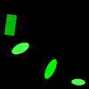
(1)
A pentagon is to the left of a green semicircle.
A green semicircle is above a green pentagon.
A magenta pentagon is farther from a semicircle than a gray semicircle.
A pentagon is above a gray semicircle.
A cross is above a blue semicircle.
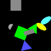
(2)
A triangle is below a gray shape.
A magenta shape is above a blue shape.
A red triangle is to the left of a blue pentagon.
A blue semicircle is below a red pentagon.
A gray triangle is to the left of a yellow shape.
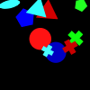
(3)
An ellipse is in front of a cross.
A gray cross is closer to a blue cross than a gray ellipse.
A red shape is behind an ellipse.
A red cross is in front of a cross.
A gray shape is above a red shape.
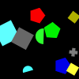
(4)
A square is closer to a magenta triangle than a cross.
A semicircle is to the right of a gray shape.
A triangle is to the left of a yellow ellipse.
A yellow cross is in front of a triangle.
A yellow shape is farther from a magenta ellipse than a magenta shape.
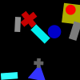
(5)
A blue ellipse is closer to a circle than a rectangle.
A cyan pentagon is to the right of a blue semicircle.
A blue ellipse is above a cyan shape.
A cyan circle is below a blue shape.
A cyan ellipse is to the left of a cyan shape.
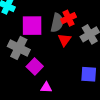
(6)
An ellipse is in front of a blue shape.
A red shape is below a red shape.
A magenta shape is above a blue square.
A blue shape is to the right of a red rectangle.
A blue square is to the right of a red shape.

(7)
A square is behind a red pentagon.
A gray shape is to the right of a cross.
A magenta shape is closer to a magenta triangle than a magenta shape.
A blue cross is to the right of a magenta shape.
A magenta square is behind a red pentagon.
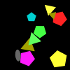
(8)
A cyan pentagon is below a cyan ellipse.
A cyan circle is below a blue circle.
A cross is farther from an ellipse than a blue circle.
A cyan shape is to the left of a green circle.
A cyan shape is above a blue shape.
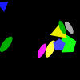
(9)
A blue cross is closer to a gray semicircle than a green cross.
A red cross is to the right of a magenta circle.
A gray shape is in front of a magenta circle.
A red shape is farther from a cross than a yellow cross.
A cyan shape is in front of a green shape.
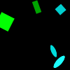
(10)
A green square is closer to a red shape than a magenta shape.
A red shape is closer to a square than a magenta ellipse.
A magenta square is to the left of a magenta shape.
A red square is closer to a magenta square than a magenta ellipse.
A green shape is farther from a magenta ellipse than a magenta pentagon.
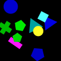
(11)
A red shape is farther from a blue semicircle than a yellow shape.
A blue rectangle is to the left of a red rectangle.
A red shape is farther from a blue rectangle than a semicircle.
A blue rectangle is closer to a red shape than a yellow shape.
A rectangle is to the left of a red rectangle.
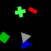
(12)
A red shape is to the left of a triangle.
A semicircle is closer to a rectangle than a red triangle.
A red shape is to the right of a magenta semicircle.
A cyan shape is to the right of a red square.
A red square is farther from a magenta semicircle than a square.
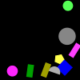
(13)
A cross is in front of a red cross.
A circle is to the right of a green cross.
A cross is behind a gray shape.
A cyan semicircle is to the right of a magenta shape.
A magenta shape is closer to a red circle than a cross.
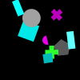
(14)
A cross is above a red cross.
A yellow cross is to the left of a square.
A red cross is closer to a green pentagon than a cyan semicircle.
A yellow cross is closer to a red cross than a yellow cross.
A cyan cross is above a green pentagon.
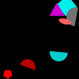
(15)
A magenta pentagon is in front of a magenta rectangle.
A magenta rectangle is in front of a magenta shape.
A red square is to the left of a triangle.
A blue triangle is to the right of a magenta rectangle.
A magenta pentagon is below a magenta pentagon.
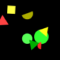
(16)
A gray shape is in front of a cross.
A blue shape is farther from a cyan shape than a gray triangle.
A blue shape is closer to a gray circle than a cyan cross.
A blue shape is to the left of a cyan ellipse.
A gray circle is in front of a blue shape.
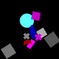
(17)
A red shape is to the left of a triangle.
A green pentagon is behind a square.
A magenta shape is in front of a pentagon.
A gray square is in front of a green shape.
A green shape is closer to a green square than a triangle.
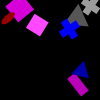
(18)
A green shape is farther from a red semicircle than a blue circle.
A semicircle is below a green rectangle.
A square is farther from a semicircle than a green shape.
A gray shape is farther from a circle than a red shape.
A green rectangle is below a circle.
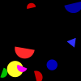
(19)
A red shape is behind a cyan ellipse.
A rectangle is to the left of a semicircle.
A green rectangle is closer to a red ellipse than a blue cross.
A cyan shape is to the right of a red shape.
A cyan shape is behind an ellipse.
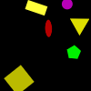
(20)
A red cross is behind a cross.
A gray cross is to the right of a cyan semicircle.
A yellow semicircle is below a magenta semicircle.
A gray semicircle is closer to a red square than a gray cross.
A semicircle is farther from a cross than a cyan triangle.
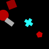
(21)
A cyan circle is below a green shape.
A cyan cross is farther from a magenta circle than a cyan circle.
A gray rectangle is farther from a magenta circle than a green ellipse.
A gray circle is to the right of a green ellipse.
A magenta rectangle is below an ellipse.
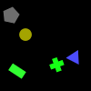
(22)
A gray pentagon is behind a green circle.
A cyan shape is to the right of a green cross.
A cyan triangle is behind a green cross.
A green pentagon is below a cyan shape.
A gray shape is behind a green circle.
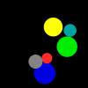
(23)
A circle is farther from a gray shape than a yellow semicircle.
A red shape is to the left of a yellow shape.
A red semicircle is farther from a gray circle than a cyan circle.
A semicircle is farther from a gray circle than a yellow shape.
A cyan semicircle is farther from a yellow ellipse than a yellow shape.
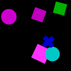
(24)
A gray cross is below a gray shape.
A gray cross is above a cyan rectangle.
A yellow shape is farther from a cyan semicircle than a yellow shape.
A cyan triangle is to the left of a yellow semicircle.
A red cross is behind a circle.
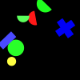
(25)
A magenta circle is closer to a magenta semicircle than a blue circle.
A magenta shape is closer to a magenta semicircle than a blue circle.
A magenta shape is behind a square.
A blue semicircle is closer to a magenta shape than a blue shape.
A magenta circle is behind a cyan square.
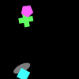
(26)
A circle is farther from a green shape than a red shape.
A blue shape is to the right of a green shape.
An ellipse is to the right of a rectangle.
A cyan square is below a circle.
A green ellipse is to the left of a blue shape.
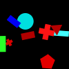
(27)
A yellow shape is to the left of a red shape.
A red ellipse is to the right of a semicircle.
A yellow ellipse is closer to a red semicircle than a red shape.
A cyan shape is above a semicircle.
A red shape is behind a semicircle.
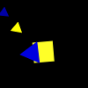
(28)
A yellow ellipse is to the right of a magenta shape.
A square is in front of a yellow rectangle.
A square is behind a yellow rectangle.
A yellow square is below a circle.
A rectangle is behind a magenta square.
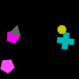
(29)
A semicircle is below an ellipse.
A cyan semicircle is farther from a cyan circle than a blue triangle.
A triangle is to the right of a magenta cross.
A blue shape is closer to a magenta rectangle than a magenta semicircle.
A magenta cross is above a magenta triangle.
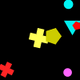
(30)
A cross is above a yellow cross.
A green shape is above a yellow cross.
A green semicircle is above a yellow shape.
A red cross is to the left of a green shape.
A gray rectangle is to the left of a cross.
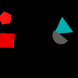
(31)
A semicircle is in front of a cyan shape.
A blue circle is to the left of a blue circle.
A blue circle is to the left of a blue circle.
A gray triangle is to the right of a cyan shape.
A gray triangle is below a blue shape.
(32)
A blue triangle is in front of a blue square.
A circle is to the right of a gray circle.
A gray circle is above a blue triangle.
A semicircle is to the left of a circle.
A blue square is behind a blue triangle.
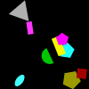
(33)
A red shape is below a square.
A rectangle is below a cross.
An ellipse is above a cyan semicircle.
A red triangle is farther from a cyan semicircle than a gray shape.
A red rectangle is to the left of a red cross.
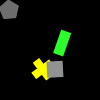
(34)
A red cross is to the left of a cyan rectangle.
A square is behind a rectangle.
A blue square is above an ellipse.
A rectangle is in front of a square.
A red cross is to the right of a cyan rectangle.
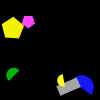
(35)
A blue semicircle is to the right of a magenta pentagon.
A blue pentagon is to the right of a cyan ellipse.
A yellow ellipse is above a cyan shape.
A red shape is to the left of a magenta ellipse.
A pentagon is to the left of a pentagon.
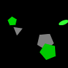
(36)
A green shape is closer to a blue circle than a green circle.
A green shape is above a green shape.
A blue circle is behind a green rectangle.
A green circle is in front of a blue circle.
A yellow shape is closer to a green rectangle than a rectangle.
(37)
A green shape is above a red circle.
A circle is above a gray ellipse.
A magenta shape is to the left of a gray ellipse.
A magenta circle is to the left of a gray ellipse.
A magenta semicircle is to the right of an ellipse.
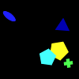
(38)
A magenta semicircle is to the left of a red pentagon.
A magenta shape is to the left of a blue cross.
A pentagon is below a semicircle.
A red semicircle is to the right of a green shape.
A green cross is above a square.
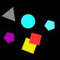
(39)
An ellipse is behind a red shape.
A red ellipse is below a green square.
A square is below a red ellipse.
A circle is to the right of a circle.
A triangle is in front of a green circle.
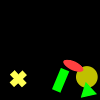
(40)
A cyan shape is behind a yellow circle.
A gray shape is below a semicircle.
A triangle is closer to a red shape than a yellow shape.
A yellow circle is closer to a semicircle than a gray circle.
A cyan shape is below a blue triangle.

(41)
A red triangle is to the left of a cyan shape.
A blue triangle is to the left of a yellow rectangle.
A green shape is to the left of a cyan ellipse.
A gray triangle is closer to a yellow triangle than a yellow shape.
A magenta shape is closer to a cyan ellipse than a blue triangle.
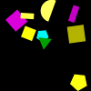
(42)
A pentagon is behind a pentagon.
A cyan shape is to the left of a yellow pentagon.
A pentagon is in front of a pentagon.
A blue semicircle is farther from a gray shape than a blue cross.
A magenta circle is to the right of a semicircle.
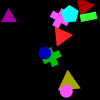
(43)
An ellipse is to the right of a cyan triangle.
A red shape is behind a cyan ellipse.
A red ellipse is closer to a cyan triangle than a circle.
A magenta shape is farther from a yellow semicircle than a cyan ellipse.
A yellow semicircle is closer to a circle than a red circle.
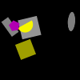
(44)
A square is closer to a red square than a yellow triangle.
A cyan square is farther from a semicircle than a yellow cross.
A red semicircle is farther from a yellow shape than a cyan square.
A square is farther from a triangle than a red semicircle.
A cyan shape is below a yellow triangle.
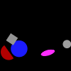
(45)
A blue circle is farther from a cyan shape than a square.
A yellow shape is farther from a cyan triangle than a blue shape.
A triangle is to the left of a yellow semicircle.
A cyan square is below a yellow semicircle.
A green square is below a magenta triangle.
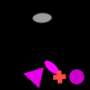
(46)
A gray ellipse is behind a red triangle.
A red triangle is in front of a pentagon.
A semicircle is to the right of a cross.
A red shape is above a gray square.
A red shape is farther from a blue cross than a gray semicircle.

(47)
A red pentagon is to the left of a cyan shape.
A square is to the left of a cyan ellipse.
A cyan semicircle is farther from a triangle than a semicircle.
A cyan cross is farther from a magenta ellipse than a cyan shape.
A cyan ellipse is to the right of a cyan shape.
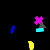
(48)
A green ellipse is above a pentagon.
A magenta ellipse is below a magenta triangle.
A rectangle is to the right of a red shape.
A red ellipse is farther from a red rectangle than a semicircle.
A yellow pentagon is closer to a semicircle than a red triangle.
(49)
A magenta shape is in front of a red rectangle.
An ellipse is behind a cross.
A red rectangle is behind a magenta square.
A magenta rectangle is closer to a red rectangle than a cross.
A magenta ellipse is above a rectangle.
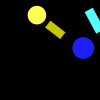
(50)
A pentagon is to the right of a blue shape.
A yellow shape is above a blue shape.
A semicircle is closer to a blue circle than a green triangle.
A pentagon is farther from a yellow shape than a blue circle.
A green shape is to the right of a blue circle.
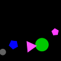
(51)
A red rectangle is in front of a cyan rectangle.
A cyan rectangle is to the right of a red rectangle.
A red square is to the left of a cyan shape.
A red shape is above a rectangle.
A cyan rectangle is behind a red cross.
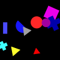
(52)
A rectangle is above a gray rectangle.
A cyan rectangle is to the left of a yellow shape.
A yellow square is in front of a circle.
A magenta ellipse is farther from a rectangle than a triangle.
A cyan rectangle is to the left of a gray circle.
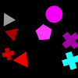
(53)
A blue triangle is below a gray pentagon.
A gray pentagon is closer to a gray pentagon than a rectangle.
A yellow shape is in front of a gray pentagon.
A gray circle is above a gray pentagon.
A magenta shape is in front of a gray shape.
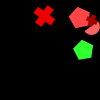
(54)
A magenta rectangle is farther from a blue triangle than a yellow cross.
A blue circle is below a triangle.
A red shape is closer to a blue triangle than a magenta square.
A triangle is to the left of a magenta square.
A square is farther from a yellow cross than a circle.
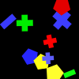
(55)
A green rectangle is to the left of a gray circle.
A gray shape is above a cyan shape.
A gray square is below a gray square.
A gray square is farther from a cyan ellipse than a square.
A yellow semicircle is to the left of a square.
(56)
A yellow semicircle is in front of a yellow triangle.
A magenta semicircle is in front of a yellow shape.
A blue shape is below a magenta pentagon.
A magenta triangle is behind a magenta shape.
A magenta semicircle is closer to a magenta pentagon than a yellow triangle.
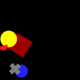
(57)
A green shape is behind a triangle.
A cyan circle is farther from a cyan triangle than a green shape.
A cyan ellipse is farther from a cyan shape than a green shape.
A green square is to the left of a cyan square.
A yellow square is behind a cyan triangle.
(58)
A cross is below a green ellipse.
A green ellipse is to the left of a semicircle.
A green ellipse is below a magenta shape.
A green ellipse is above a green cross.
A cyan cross is to the left of a magenta square.
(59)
A blue cross is in front of a rectangle.
A gray shape is farther from a green shape than a green ellipse.
A green ellipse is above a yellow cross.
A cross is farther from a red pentagon than a green ellipse.
A blue ellipse is above a red pentagon.
(60)
A red circle is to the right of a blue shape.
A cross is in front of a cyan pentagon.
A cyan square is to the left of a red circle.
A cyan cross is closer to a blue shape than a square.
A square is farther from a gray shape than a red circle.
(61)
A green circle is below a cross.
A magenta shape is farther from a cross than a cyan square.
A circle is above a magenta shape.
A circle is above a green ellipse.
A cross is farther from a cyan square than a magenta shape.
(62)
A red circle is to the right of a cyan pentagon.
A green shape is farther from a red circle than a cyan shape.
A circle is closer to a semicircle than a cyan shape.
A yellow shape is above a magenta rectangle.
A red shape is farther from a magenta pentagon than a rectangle.

(63)
A yellow square is closer to a yellow triangle than a blue ellipse.
A blue ellipse is below a green square.
A red semicircle is above a green square.
A red triangle is farther from a yellow shape than a green square.
A red semicircle is below a yellow triangle.
(64)
A gray semicircle is in front of a yellow cross.
A red shape is farther from a yellow shape than a circle.
A red triangle is to the right of a yellow shape.
A triangle is above a yellow cross.
A cross is to the left of a red circle.
(65)
A red square is to the left of a yellow cross.
A magenta circle is to the left of a yellow cross.
A magenta circle is farther from a red triangle than a red square.
A yellow shape is to the left of a green semicircle.
A magenta square is below a circle.
(66)
A yellow shape is to the right of a magenta triangle.
A triangle is farther from a red triangle than a yellow triangle.
A yellow triangle is in front of a yellow triangle.
A gray triangle is in front of a triangle.
A pentagon is closer to a red triangle than a triangle.
(67)
A green rectangle is in front of a gray pentagon.
A green rectangle is in front of a gray pentagon.
A green circle is farther from a red shape than a green rectangle.
A pentagon is behind a green rectangle.
A pentagon is behind a rectangle.
(68)
A blue shape is to the left of a gray square.
A yellow shape is closer to a square than a gray shape.
A circle is below a cross.
A square is farther from a gray shape than a green shape.
A triangle is closer to a cross than a green cross.
(69)
A green shape is in front of a yellow rectangle.
A cross is to the right of a cyan cross.
A cyan shape is behind a yellow cross.
A cyan rectangle is below a blue circle.
A yellow circle is behind a cross.
(70)
A red semicircle is farther from a red cross than a semicircle.
A red shape is below a red cross.
A cyan shape is to the right of a semicircle.
A cross is to the right of a red semicircle.
A red cross is to the right of a red shape.
(71)
A cyan shape is to the left of a gray pentagon.
A cyan pentagon is closer to a circle than a rectangle.
A cyan shape is below a circle.
A rectangle is to the left of a cyan square.
A gray pentagon is to the right of a circle.
(72)
A magenta shape is closer to a semicircle than a magenta shape.
A magenta square is closer to a magenta ellipse than a semicircle.
A cross is above a square.
A magenta ellipse is closer to a magenta cross than a square.
An ellipse is farther from a magenta square than a semicircle.
(73)
A magenta pentagon is closer to a magenta rectangle than a red shape.
A red rectangle is above a gray cross.
A red cross is to the left of a red rectangle.
A red shape is closer to a cross than a pentagon.
A gray cross is below a red shape.

(74)
A magenta shape is to the left of a yellow pentagon.
A gray pentagon is to the left of a green shape.
A red pentagon is farther from a green triangle than a pentagon.
A red triangle is to the right of a pentagon.
A cyan pentagon is farther from a red shape than a yellow shape.
(75)
A red triangle is in front of a red shape.
A blue shape is above a red triangle.
A pentagon is in front of a red shape.
A blue semicircle is farther from a pentagon than a red shape.
A square is to the right of a red triangle.
(76)
An ellipse is below a blue shape.
A blue shape is above a red shape.
A red circle is to the left of a blue shape.
A blue square is below a circle.
A green shape is closer to a gray shape than a blue square.
(77)
A green shape is behind a gray rectangle.
A cyan ellipse is above a cyan circle.
A red pentagon is to the right of a cyan square.
A green pentagon is to the left of a rectangle.
An ellipse is below a red rectangle.
(78)
A yellow pentagon is farther from a pentagon than an ellipse.
A cyan ellipse is below a magenta shape.
A cyan triangle is behind a pentagon.
A yellow pentagon is to the right of a cyan pentagon.
An ellipse is farther from a triangle than a magenta ellipse.

(79)
A gray pentagon is farther from a gray circle than a cyan circle.
A blue circle is to the left of a magenta ellipse.
A magenta triangle is to the right of a cyan pentagon.
A cyan ellipse is above a cyan square.
A gray pentagon is above a gray shape.
(80)
A green triangle is farther from a red semicircle than a green shape.
A blue ellipse is below a green ellipse.
A semicircle is to the left of a yellow square.
A red pentagon is below a green ellipse.
A red semicircle is above a blue shape.
(81)
A gray shape is farther from a magenta triangle than a blue semicircle.
A yellow shape is to the left of a semicircle.
A gray cross is below a magenta cross.
A yellow triangle is farther from a magenta semicircle than a blue semicircle.
A gray shape is farther from a cross than a blue shape.
(82)
A cyan shape is to the left of a magenta shape.
A green rectangle is in front of a magenta pentagon.
A rectangle is closer to a red semicircle than a magenta shape.
A magenta rectangle is to the left of a magenta circle.
A rectangle is in front of a magenta pentagon.
(83)
A blue rectangle is to the right of a cyan shape.
A blue rectangle is in front of a magenta semicircle.
A rectangle is in front of a cyan shape.
A magenta shape is in front of a cyan shape.
A blue shape is to the right of a gray circle.
(84)
A red shape is to the left of a blue ellipse.
A blue ellipse is closer to a square than a gray square.
A circle is to the left of a blue semicircle.
A circle is to the right of an ellipse.
A blue ellipse is closer to a blue circle than a blue ellipse.
(85)
A gray circle is to the right of a magenta square.
A square is behind a cyan shape.
A cyan circle is in front of a magenta square.
A green square is above a cross.
A cross is behind a cyan shape.
(86)
A green cross is above a green semicircle.
A green rectangle is closer to a semicircle than a yellow pentagon.
A yellow shape is closer to a magenta shape than a triangle.
A green shape is above a yellow cross.
A green triangle is closer to a triangle than a green shape.
(87)
An ellipse is in front of a rectangle.
A triangle is behind an ellipse.
A square is in front of a magenta square.
A pentagon is below a yellow ellipse.
A red rectangle is above a magenta square.
(88)
A green rectangle is in front of a cross.
A gray shape is to the left of a green shape.
A green rectangle is in front of a magenta cross.
A circle is farther from a rectangle than a magenta shape.
A gray shape is farther from a magenta cross than a green rectangle.
(89)
A pentagon is to the right of a magenta shape.
A gray shape is below a magenta shape.
A magenta circle is to the left of a red shape.
A cross is to the right of a magenta cross.
A gray cross is above a circle.
(90)
A gray shape is to the left of a yellow shape.
A gray semicircle is to the left of a gray semicircle.
An ellipse is to the left of a gray shape.
A blue cross is closer to a semicircle than a yellow semicircle.
A yellow shape is in front of a gray ellipse.
(91)
A blue semicircle is to the left of a square.
A cyan shape is above a triangle.
A circle is closer to a red rectangle than a green triangle.
A red rectangle is closer to a yellow semicircle than a triangle.
A square is above a red rectangle.
(92)
A yellow triangle is to the left of a semicircle.
A green ellipse is to the right of an ellipse.
A gray shape is in front of a gray shape.
A yellow ellipse is to the left of a triangle.
A green shape is farther from a yellow shape than a gray circle.
(93)
An ellipse is farther from a magenta circle than a green triangle.
A green shape is closer to a circle than a magenta triangle.
A green shape is to the left of a gray shape.
A blue shape is to the left of a gray shape.
A gray triangle is closer to a green triangle than a magenta shape.
(94)
A circle is above a gray circle.
A gray triangle is to the right of a magenta rectangle.
A cyan shape is closer to a magenta circle than a red rectangle.
A green circle is above a gray circle.
A gray triangle is to the left of a semicircle.
(95)
A magenta triangle is farther from a blue shape than a yellow circle.
A cyan circle is to the right of a red shape.
A yellow circle is farther from a blue circle than a cyan rectangle.
A gray circle is to the right of a red shape.
A blue circle is below a yellow shape.
(96)
A gray shape is farther from a magenta circle than a green shape.
A green circle is to the right of a red pentagon.
A rectangle is farther from a green pentagon than a green shape.
A yellow rectangle is below a circle.
A pentagon is to the right of a magenta shape.
(97)
A yellow shape is to the left of a magenta square.
A green shape is above a yellow pentagon.
A yellow pentagon is below a yellow square.
A green square is above a yellow pentagon.
A pentagon is closer to a magenta shape than a yellow square.
(98)
A rectangle is in front of a yellow cross.
A square is closer to a cyan shape than a cross.
A magenta semicircle is above a cyan ellipse.
A blue rectangle is to the right of a yellow cross.
A red square is to the right of a yellow cross.
(99)
An ellipse is to the left of a yellow shape.
A yellow semicircle is above a blue semicircle.
A magenta shape is in front of a semicircle.
A magenta ellipse is closer to a yellow semicircle than a blue cross.
A cyan shape is farther from a magenta shape than a yellow semicircle.
(100)
A yellow cross is in front of a red shape.
A cyan semicircle is to the left of a red ellipse.
A yellow cross is to the left of a yellow triangle.
A cyan shape is closer to a triangle than a yellow cross.
A red cross is below a yellow semicircle.